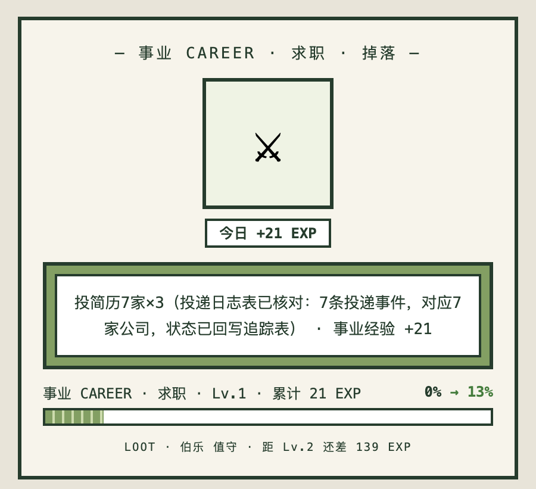

AI Workflow · Portfolio
我把业务流程
做成能跑的系统
出海运营出身，2 年 8 个月跑通「用户调研 → 众筹 → 社媒矩阵 → AI 流程优化」。现在用 Claude Code 和 Codex 把重复流程拆成 SOP、交给 Agent 执行、再人工验收——下面这些全部真实投产在用。
40 亿+
个人月 token 用量
$3M+
两个百万美金级众筹项目
2 年 8 个月
出海全链路
985
华南理工 · 信息与计算科学
作品
Works求职追踪与投递管理系统
我正在用它找工作的一套系统
岗位库、投递日志、状态回写、跟进节奏、复盘归档，全部在一张多维表格里跑。投递出去的那一秒，状态自己就更新了。
- 岗位库 50+ 条自动入库并打标，关闭的岗位自动标出
- 投递日志与主表联动：每一次动作自动落时间、事件类型、结论
- 按匹配度、地点、薪资分档决定先投谁
- 投递按简历标准计 EXP，配合每日掉落卡做进度结算
feishu base · 双表联动
50+ 岗位自动入库并打标
投递日志 ⇄ 追踪表 状态自动回写
匹配度 / 地点 / 薪资 三重分档
关闭岗位自动标出
投递按简历标准计 EXP，每日结算
表头：日期 · 公司 · 岗位 · 事件 · 详情

life settlement · 218 days
六维属性结算
失败也是经验（叠加态）
成就背包 + 月度曲线
RPG 像素风个人项目 · 数据不公开
system · running daily
5 agent channels
feishu message bridge
mobile dispatch
全部跑在飞书内，无独立产品
pipeline
batch ingest
semantic search
cite-back
电子书 → 语义检索 → 带出处的问答
production · 出海品牌
audio track + frame judge
32 clips / best day
70-80% 可用即投产
发布环节仍人工，不做过度自动化

我怎么干活
Method01 · 拆
找出最耗人的那一条线
先看流程哪一步最吃人力，写成能交给别人照做的步骤。不梳理清楚就不动手。
02 · 跑
交给 Agent 按 SOP 执行
用 Claude Code 和 Codex 建 Skill 或工作流，让它按步骤跑，而不是靠一次次的提示词。
03 · 验
人工验收才投产
AI 产出必须过一遍人工验收。我判断的是能不能用，不是看起来对不对。
关于我
About我是莫咏，华南理工大学信息与计算科学专业，985。不写生产代码——我的强项是把业务流程拆清楚、让 AI 跑起来、再判断产出能不能用。
过去两年在出海品牌做社媒运营和流程优化，用 AI 把批量剪辑、教程、招聘评估这些重复活变成能投产的流程；再往前是跨境营销，两个百万美金级众筹项目从头跟到尾。
我不太喜欢把话说满。简历上的动词我都留了边界——主导落地的项目我写「设计方案」，营销端独立负责的我才写「独立负责」。只写我真做过的那部分。
现在找的是 AI 产品运营、AI 应用与业务赋能、Agent 方向的产品岗。如果你的团队正在把 AI 真的塞进业务流程里，我大概能帮上点忙。
- 2025.07 – 2026.08计客 · 智能硬件出海品牌海外社媒运营 → AI 流程优化（公司主动转岗）
- 2024.03 – 2025.06凯吉特 · 跨境营销海外市场营销 · Kickstarter 众筹看两个百万美金项目 →
- 2023.07 – 2023.10唛壳科技 · 跨境电商亚马逊运营
- 2019 – 2023华南理工大学 · 信息与计算科学校级二等奖学金